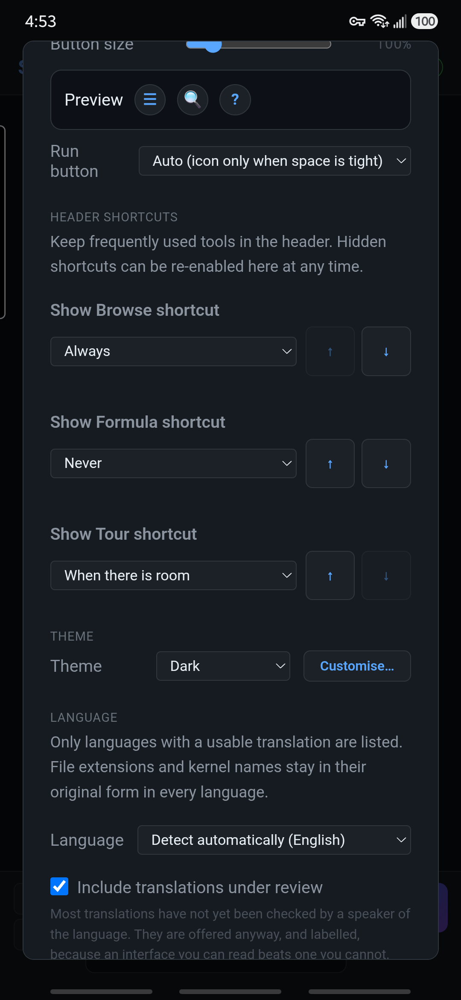
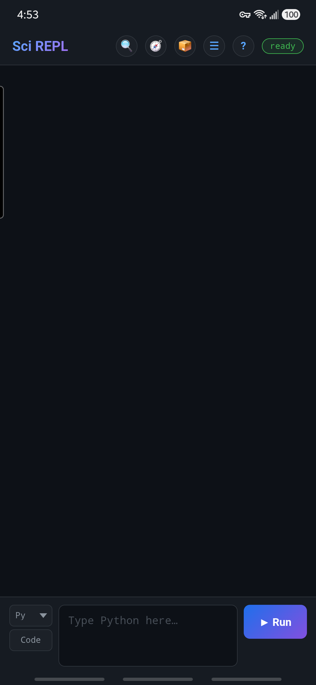
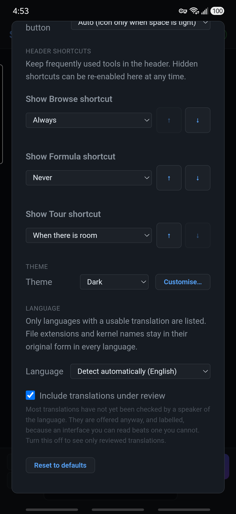

Make the interface your own
Show Browse and adjust Appearance
Put the 📦 Browse shortcut in SciREPL Free's header, then choose comfortable buttons and a light or dark theme. Shared Appearance controls are also useful in Pro; a separate Pro-only section covers full-screen editing, extra keys and live syntax colours. You can do this without changing or running any workbook cells.
The five screenshots are real captures of SciREPL Free 1.4.0-debug on a Samsung Galaxy S24+, taken on . They show the debug-signed app, not an installation from the Play Store. The pictured steps use Free 1.4.0 controls. Browse's header shortcut is Free-only; Pro users can open the same catalogue from Menu. The Pro-only text below is verified against the Pro 1.4.0 codebase; those controls are not illustrated by these Free pictures, and older menus can differ.
Step 1
Open Menu → Appearance
- Find ☰ Menu, the three-horizontal-lines button in the header at the top of the app.
- Tap it, then choose 🎨 Appearance. If the menu is taller than your screen, scroll inside it to find the entry.
Changes take effect as you choose them. The ordinary controls below need no Save or Apply button. Closing Appearance with × does not cancel your changes, and your choices are kept for the next app visit.
Step 2
Free 1.4.0: show the 📦 Browse shortcut
Using Pro? Skip this shortcut setup and use Menu → Browse Packages, Bundles & Workbooks. The next sections cover shared Appearance controls.
- Open Menu → Appearance, then scroll to Header shortcuts.
- Find Show Browse shortcut and choose Always.
- Close Appearance with ×. The 📦 button is now in the header; tap it to open Browse Packages, Bundles & Workbooks.

The choices have different purposes:
- Always: keep the shortcut visible, even if the header needs another row.
- When there is room: the default for Browse. Show it only when it fits; a narrower screen, larger buttons, or a longer status message can make it disappear.
- Never: hide the header shortcut.
The ↑ and ↓ buttons change which optional shortcut gives up its place first when space is tight. Move a shortcut up to keep it longer, or down to let it disappear sooner. They change priority, not the icons' positions in the header.

No 📦 button? The Menu route still works when the shortcut is hidden or your version does not offer it. For a compact header, return Browse to When there is room instead of forcing every optional shortcut to stay visible.
If you came here to find a workbook, you can now return to the Markov Groups walkthrough and search the catalogue.
Optional · Pro only
Pro only: full-screen editing, extra keys and syntax colours
These are SciREPL Pro 1.4.0 editor controls, not controls shown in the Free screenshots above. Extra keys and live colours are separate settings.
Enter full-screen editing
- New cell: tap the ⤢ Full screen button in the new-cell code field. Its outward diagonal arrows mean expand the editor.
- Saved cell: tap that cell's ✎ pencil to edit it, then tap ⤢ in the corner of that cell's code field.
The editor takes the screen so more code fits. Enabled extra keys and suggestion chips remain available above the keyboard; syntax colours use the same setting described below. Entering full screen does not run code.
Tap the editor label at the top to return to the workbook with your draft still open; Back or Esc also backs out of full-screen mode. For a saved cell, Done applies the draft without running it, while Cancel discards the edit. For a new cell, Done and Cancel both leave full screen without clearing the draft or creating a cell; Run is a separate action.
Not the same as “Panels use the full screen”. That separate Appearance option controls the top margin of panels and dialogs; it does not open the full-screen code editor.
Show the extra-key row
Open Menu → Completion → Section → General. Set Extra keys above the keyboard → On; the default is Off. The row offers Esc, Tab, indent removal, arrows, Home, End, Run and punctuation. Swipe it sideways to reach keys that do not fit. Choosing On does not run code, but the row's ▶ Run key does—review the source before tapping it.
In the same section, Chips in portrait and Chips in landscape choose Own row or Replace extra keys. The defaults are Own row in portrait and Replace extra keys in landscape: while candidates appear, they can temporarily take the keys' place. With extra keys off, chips use their own row. Accessory rows in landscape offers Off, When there is room (default), or Always. When there is room uses Minimum visible code lines, initially 8, so a short landscape view can hide optional rows.
Turn live syntax colours on or off
Open Menu → Appearance → Syntax colours while typing. Choose On to colour supported code while editing, or Off for plain text. The default, Auto (desktop on, touch off), enables colours in desktop browsers and leaves them off on phones. If typing feels less responsive, choose Off; colouring can cost typing speed on slower devices. Code longer than 6000 characters remains uncoloured even with On.
Colours do not validate or execute code, send an API request, or turn completion on. Changing this setting takes effect immediately and does not alter your source.
Files & Storage has a separate switch
For a text file, use Menu → Files & Storage (VFS / Paths), select the file, then choose Full screen. That editor's Syntax highlighting checkbox is independent of Appearance's live-colour setting and is off by default. It is unavailable for unrecognised file types or files over 100,000 characters. Its extra keys share the Completion preference, but can hide when the file editor has too little room. File Save writes your edits; switching colours alone does not.
Step 4
Choose light, dark, or your system theme
Scroll to Theme and choose Dark, Light, or Match system. Dark is the default. Match system follows your device's light/dark preference; it is a choice you make, not the default.

You do not need Custom, Customise…, a theme JSON editor, or Advanced: custom CSS for this lesson. Those advanced options are outside this beginner walkthrough.
Optional finishing touches
Android space and returning to defaults
Under Layout, leave Top margin → Auto selected. It follows the device's reported safe area so the header has appropriate space above it; you do not need to guess a pixel value.
In the Android app, Hide Android status bar offers:
- Never: the default; leave the clock and notification status bar visible.
- In landscape: hide that bar while the phone is sideways; restore it in portrait.
- Always: hide it in both orientations.
This setting affects only the Android status bar, not the navigation or gesture bar. It is absent from the browser/PWA and Windows interface. Pro 1.3.0 instead has a checkbox named Hide Android status bar in landscape.
Want to undo the appearance changes? Reset to defaults restores the default theme, header button size, top margin, shortcuts, and status-bar preference, and removes custom theme/CSS choices. It does not erase your workbook cells. It does not reset the separate Run button or interface-language preferences; choose Run's Auto option yourself if needed.
Close Appearance with × when you are done. Continue with the Markov Groups workbook walkthrough, or return to the concise interface reference.